UDN
Search public documentation:
ParticleSystemReference
日本語訳
中国翻译
한국어
Interested in the Unreal Engine?
Visit the Unreal Technology site.
Looking for jobs and company info?
Check out the Epic games site.
Questions about support via UDN?
Contact the UDN Staff
中国翻译
한국어
Interested in the Unreal Engine?
Visit the Unreal Technology site.
Looking for jobs and company info?
Check out the Epic games site.
Questions about support via UDN?
Contact the UDN Staff
UE3 Home > Particle & Effects > Particles Systems > Particle System Reference
UE3 Home > FX Artist > Particle System Reference
UE3 Home > FX Artist > Particle System Reference
Particle System Reference
- Particle System Reference
- Overview
- The ParticleSystem Class
- The ParticleEmitter Class
- Modules
- ParticleModule
- Required Module
- Spawn Module
- TypeData Modules
- Module Types
- Acceleration Modules
- Attractor Modules
- Beam Modules
- Camera Modules
- Collision Modules
- Color Modules
- Event Modules
- Kill Modules
- Lifetime Modules
- Location Modules
- Material Modules
- Orbit Modules
- Orientation Modules
- Parameter Modules
- Rotation Modules
- Rotation Rate Modules
- Size Modules
- Spawn Modules
- Store Spawn Time Modules
- SubUV Modules
- Velocity Modules
- Lit Particles
- Performance
Overview
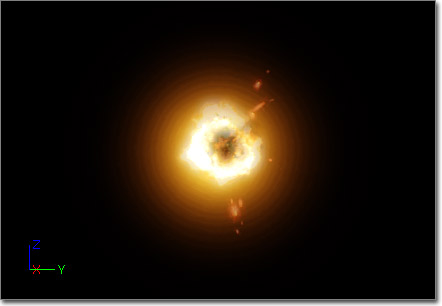
The ParticleSystem Class
Bounds
Fixed Relative Bounding Box - Allows for user-set bounding-boxes for the particle system. Removes the overhead of performing bounds updating each frame, at the cost of potentially rendering/updating when the effect is not visible or conversely not rendering/updating when the effect is in view. Unless you have emitters with wildly varying size scales, you should almost always use a fixed bounding box for performance reasons.
NOTE: Right clicking the 'Toggle Bounds' button on the cascade toolbar will fill in this dialog box with the currently uses values of the dynamic box in cascade, giving you a base to start from to tweak to your liking.
Use Fixed Relative Bounding Box - If TRUE, the code will utilize the FixedRelativeBoundingBox as the bounds for the particle system.
Delay
Delay - The amount of time in seconds the ParticleSystem should wait before activating when ActivateSystem() is executed. Also, this value is the high end of the range to use for choosing a random delay value when Use Delay Range is true.
Delay Low - The low end of the range to use for choosing a random delay value when Use Delay Range is true.
Use Delay Range - If True, a random value between Delay Low and Delay is chosen for the actual delay value to use.
LOD
LOD Distance Check Time - This is how often (in seconds) the system should perform a distance check to determine the LOD level to utilize. (Only used when LODMethod is set to Automatic.)
LODDistances - An array of distances for determining which LOD level to utilize. (Only used when LODMethod is set to Automatic.) These numbers recommend the minimum distance away for the LOD level to be selected. For example, consider a system with 3 LOD levels:
LOD Method - This enumeration indicates the method the system should utilize for selecting appropriate LOD levels. Two methods are available:
LODSettings - An array of structs determining specific settings to use for each individual LOD. Currently, the only setting Lit controls whether the ParticleSystem accepts lights when the given LOD is in use.
| LODDistanceIndex | Value | Range | LOD level selected |
|---|---|---|---|
| 0 | 0.0 | 0.0 - 2499.9 | 0 (the highest) |
| 1 | 2500.0 | 2500.0 - 4999.9 | 1 |
| 2 | 5000.0 | 5000.0 - Infinity | 2 |
| Method | Description |
|---|---|
| Automatic | Set the LOD level based on LOD distance and check time automatically. |
| DirectSet | The game will set the LOD level for the system to use directly. |
MacroUV
Macro UV Position - The local-space position relative to the ParticleSystem used as the center point to generate the UV texture coordinates for the ParticleMacroUV material expression.
Macro UV Radius - World-space radius that determines the distance from the Macro UV Position where the UV texture coordinates generated for the ParticleMacroUV material expression will begin tiling.
Mobile
Use Mobile Point Sprites - If true, when on a mobile platform the ParticleSystem will use point sprite rendering to speed up particle rendering.
Occlusion
Custom Occlusion Bounds - The bounds to use for calculating occlusion when using the EPSOBM_CUstomBounds Occlusion Bounds Method.
Occlusion Bounds Method - The method to use when calculating occlusion of the ParticleSystem.
| Method | Description |
|---|---|
| EPSOBM_None | Occlusion is not calculated for the ParticleSystem |
| EPSOBM_ParticleBounds | The Bounds of the ParticleSystemComponent is used for calculating occlusion for the ParticleSystem |
| EPSOBM_CUsomtBounds | The Custom Occlusion Bounds values are used to calculate occlusion for the ParticleSystem |
ParticleSystem
Orient ZAxis Toward Camera - If true, the local Z-axis of the ParticleSystem will be oriented towards the camera at all times.
SecondsBeforeInactive - if the particle system is not rendered for this amount of time (in seconds), it will go inactive no longer being ticked. Enter a zero to prevent the system from ever being forced to be inactive.
Skip Spawn Count Check - If true, the spawning limiter check performed by the engine will not be performed. This check limits the number of particles allowed based on the MaxParticleVertexMemory property of the engine (specified in BaseEngine.ini). This is intended to only be used for effects used in pre-rendered cinematics as it would have performance impacts in a typical game situation.
SystemUpdateMode - This enumeration indicates the method the system should use to update its emitters. Two modes are available:
EPSUM_FixedTime will step the system a given amount regardless of the current frame-rate. This mode should only be used when the effect timing is not key to another system - such as tying the emitter to an animation.
UpdateTime_FPS - The time-step to use when operating in EPSUM_FixedTime.
WarmupTime - The amount of time to warm-up the system at launch. This allows for an emitter to start in full bloom. This can degrade performance so use sparingly especially at high values. Good for systems you want to have started while the level initially loads, like smoke pillars or ambient effects.
| Mode | Description |
|---|---|
| EPSUM_RealTime | Update the emitters in realtime. |
| EPSUM_FixedTime | Update the emitters at a fixed time step. This locks the system to the update time of the game and is performance dependant, so a lowerframerate lowers the update time of the system (slowing it down), whereas a higher framerate speeds it up. Usually only used in special cases. |
Thumbnail
ThumbnailWarmup - The amount of time to warm-up the system before catching the thumbnail render when Use Realtime Thumbnail is checked.
Use Realtime Thumbnail - If true, the thumbnail displayed in the Content Browser for the ParticleSystem asset will be automatically captured using the default camera position and reflect the current settings and appearance of the ParticleSystem instead of using the saved thumbnail.
 Note: Using realtime thumbnail rendering can slow down performance of the Content Browser.
Note: Using realtime thumbnail rendering can slow down performance of the Content Browser.
The ParticleEmitter Class
Collapsed - If true, the ParticleEmitter will appear collapsed in the Emitter List in Cascade. Double-clicking the ParticleEmitter block toggles this property.
Emitter Editor Color - The color of the ParticleEmitter block when collapsed as well as in the Curve Editor and debug rendering modes.
EmitterName - The name of the emitter.
Emitter Render Mode - The method to use when rendering the emitter's particles.
InitialAllocationCount - This value allows for the user to declare the number of particles that should be allocated at initialization of the emitter. If it is 0, the calculated peak count is used. (Since the calculated value can result in a higher than required count, this parameter is supplied to allow tighter memory control.)
| Mode | Description |
|---|---|
| ERM_Normal | Renders the emitter's particles as intended, e.g., as sprites, meshes, etc. |
| ERM_Point | Renders the emitter's particles as a 2x2 pixel block with no scaling and using the Emitter Editor Color |
| ERM_Cross | Renders the emitter's particles as a cross of lines scaled according to any size modules and using the Emitter Editor Color |
| ERM_None | The emitter's particles are not rendered |
Modules
ParticleModule
The base class for all modules. The class contains the following public member(s):
Cascade
3DDraw Mode - If true, any 3D visualization helpers for the module, e.g. wireframe geometry depicting the extents of an Initial Location module, will be displayed.
Module Editor Color - This is the color the module will utilize in the graph editor of Cascade.
Required Module
Every particle emitter contains this module which contains all the properties that are required by a particle emitter. This includes the following:
Emitter
Material - The material to apply to the particles.
Screen Alignment - How the particle is oriented in relation to the camera. The following modes are allowed:
Use Local Space - Indicates whether the particle emitter should apply the world transform of its parent (FALSE) or not (TRUE). When TRUE, a particle emitter will perform all operations in local space.
Kill On Deactivate - Indicates whether the particle emitter should kill all particles on deactivation. If FALSE, any living particles will complete their lifetime when the emitter is deactivated.
Kill On Completed - Indicates whether the particle system component should kill this emitter instance when it completes.
Sort mode - The sorting mode use for the emitter.
Use Legacy Emitter Time - If true, the EmitterTime for the emitter will be calculated by modulating the SecondsSinceCreation by the EmitterDuration. As this can lead to issues w/ looping and variable duration, a new approach has been implemented. If false, this new approach is utilized, and the EmitterTime is simply incremented by DeltaTime each tick. When the emitter loops, it adjusts the EmitterTime by the current EmitterDuration resulting in proper looping/delay behavior.
Orbit Module Affects Velocity Alignment - If true, movement generated by orbit modules is applied to velocity-aligned particles.
| Flag | Description |
|---|---|
| Square | Uniform scale (forced to the X setting), facing the camera |
| Rectangle | Non-uniform scale, facing the camera |
| Velocity | Orient the particle towards both the camera and the direction the particle is moving. Non-uniform scaling is allowed. |
| TypeSpecific | Use the alignment method indicated in the type data module (Mesh only) |
| Mode | Description |
|---|---|
| PSORTMODE_None | No sorting is performed |
| PSORTMODE_ViewProjDepth | Sort particles by depth based on the view projection |
| PSORTMODE_DistanceToView | Sort particles by distance of the particle to the camera in world space |
| PSORTMODE_Age_OldestFirst | Sort the particles by age, with oldest particle drawn first |
| PSORTMODE_Age_NewestFirst | Sort the particles by age, with newest particle drawn first |
Delay
Delay First Loop Only - When TRUE, and emitter with an EmitterDelay of greater than 0 and EmitterLoops greater than 1 will only perform the delay on the first loop.
Emitter Delay - The amount of time to delay starting the emitter. This allows for 'staggering' emitters within a single particle system. This also serves as the upper bound for choosing a random delay value when using a range.
Emitter Delay Low - The lower bound for choosing a random delay value when using a range.
Emitter Delay Use Range - If true, the effective delay value for the emitter will be a random value chosen from the range [Emitter Delay Low, Emitter Delay].
Duration
Duration Recalc Each Loop - When TRUE, the emitter will select a new duration from the range of [EmitterDurationLow..EmitterDuration] when looping.
Emitter Duration - Indicates how long, in seconds, the emitter will run before looping. If set to 0, the emitter will never loop.
Emitter Duration Low - Gives the low-end of emitter duration to allow for variations in the duration of an emitter.
Emitter Duration Use Range - When TRUE, the emitter will select a duration from the range of [EmitterDurationLow..EmitterDuration] when starting up.
Emitter Loops - The number of times to loop before going inactive. If set to 0, the emitter will run constantly, looping `forever'.
SubUV
The SubUV data indicates that the emitter should utilize sub-images of the texture applied. This is useful for implementing simple animations on particles. It contains the following members:
Interpolation Method - An enumeration indicating the method that should be utilized to interpolate between sub-images. This can be on of the following:
Random Image Changes - The number of times to changes the image over the lifetime of the particle when InterpolationMethod is set to Random.
Sub Images_Horizontal - The number of sub-images in the texture on the horizontal (x) axis of the texture.
Sub Images_Vertical - The number of sub-images in the texture on the vertical (y) axis of the texture.
Scale UV - Indicates that the UV values should be scaled to properly `fit' the sub-image size. This is only used for mesh emitters.
| Method | Description |
|---|---|
| None | Do not apply SubUV modules to this emitter. |
| Linear | Smoothly transition between sub-images in the given order, with no blending between the current and the next |
| Linear_Blend | Smoothly transition between sub-images in the given order, blending between the current and the next |
| Random | Pick the next image at random, with no blending between the current and the next |
| Random_Blend | Pick the next image at random, blending between the current and the next |
Rendering
Downsample Threshold Screen Fraction - Fraction of the screen that the particle system's bounds must be larger than for the emitter to be rendered downsampled. The default is 0, which means downsampling is not allowed. A value of .5 means that the particle system's bounds must take up half of the screen or more before the emitter will be rendered at a lower resolution.
Downsampled translucency renders significantly faster than full resolution, except that there is a fairly large constant overhead for every emitter that is downsampled. For this reason, it's best to only use downsampling on emitters that are known to have a fillrate cost larger than the constant overhead. A value of .5 is usually a good tradeoff when downsampling is desired. The quality of downsampled translucency is also affected, high frequency details will be lost and opaque edges in front of the translucency will appear more aliased.
Note: This functionality uses the bounding radius so it's important that the particle system's bounds are accurate, use bUseFixedRelativeBoundingBox if necessary.
Use Max Draw Count - When TRUE, the emitter will never draw more than MaxDrawCount particles. All particles will still be updated when ticking.
Max Draw Count - The number of particles to limit rendering to.
Normals
Emitter Normals Mode - The mode used to generate normals for this emitter LOD.
Normals Cylinder Direction - When Emitter Normals Mode is ENM_Cylindrical, particle normals are created to face away from the cylinder going through Normals Sphere Center in the direction Normals Cylinder Direction. This value is in local space.
Normals Sphere Center - When Emitter Normals Mode is ENM_Spherical, particle normals are created to face away from _Normals Sphere Center. The value is in local space.
| Mode | Description |
|---|---|
| ENM_CameraFacing | Default mode, normals are based on the camera facing geometry |
| ENM_Spherical | Normals are generated from a sphere centered at NormalsSphereCenter |
| ENM_Cylindrical | Normals are generated from a cylinder going through NormalsSphereCenter, in the direction NormalsCylinderDirection |
Spawn Module
Every particle emitter contains this module which contains all the properties that determine how particles are spawned. This includes the following:
Burst
The Burst data indicates that the emitter should force the emission of a given number of particles at a set time. It involves the following members:
BurstList - An array of integer Count and CountLow and float Time values identifying desired bursts of particles. Time is in the range of [0..1] over the emitter lifetime. If CountLow is set to -1, the emitter will burst Count particles at the given time. Otherwise, the emitter will burst a random number of particles in the range [CountLow..Count] at the given time.
ParticleBurstMethod - The method to use when emitting particles in bursts. Currently ignored.
Process Burst list - If true, the Burst List will be processed. If multiple Spawn Modules are 'stacked' in an emitter and ANY one of them has this property disabled, none of the Burst Lists will be processed for the emitter.
Spawn
Process Spawn Rate - If true, the Rate will be processed. If multiple Spawn Modules are 'stacked' in an emitter and ANY one of them has this property disabled, none of the Rates will be processed for the emitter.
Rate - This float distribution provides the spawn rate (particle per second) of particles for the emitter at a given time.
Rate Scale - A scaling factor to apply to the Rate for the emitter.
TypeData Modules
The default type of an emitter when added to a ParticleSystem is that of a sprite emitter. It is also possible to create other types of emitters though the use of TypeData modules. These modules provide specific functionality for emitting other types of particles, such as beams, meshes, ribbons, or even emitters which make use of PhysX for using physics simulations to control the behavior of the particles. The following TypeData modules are provided:AnimTrail TypeData
The AnimTrail type data module is used to create emitters that will be used in conjunction with AnimNotify_Trails animation notifications to create trails or streaks behind geometry of a SkeletalMesh as it animates to add to the visual effect of the motion. An example of this is the trails you often see behind swords when swung. The AnimTrail type data module has the following properties:
Anim
Control Edge Name - Specifies the name of the socket on the SkeletalMesh that supplies the control edge for this emitter. This value should match up with the Control Point Socket Name of the AnimNotify_Trails notify of the animation sequence.
Rendering
Distance Tessellation Step Size - The distance between tessellation points for the trail. This is used to determine how many tessellation points the trail has, and thus how smooth the trail is. The exact caulcation is:
TessellationPoints = Trunc((Distance Between Spawned Particles) / (DistanceTessellationStepSize))Render Geometry - If true, the trail geometry will be rendered. This should typically be enabled as the trail is not visible otherwise. Render Spawn Points - If true, stars are rendered in the location of each spawned particle point along the trail. Used for debugging in Cascade. Render Tangents - If true, the tangent at each spawned particle point along the trail is rendered using a line. Used for debugging in Cascade. Render Tessellation - If true, the tessellated path between each spawned particle is rendered. Used for debugging in Cascade. Tangent Tessellation Scalar - The tangent scalar for tessellation. Angles between tangent A and B are mapped to [0.0f .. 1.0f]. This is then multiplied by TangentTessellationScalar to give the number of points to tessellate Tiling Distance - The (estimated) covered distance to tile the 2nd UV set at. If 0.0, a second UV set will not be passed in.
Trail
Clip Source Segment - If true, the trail will not be joined to the source position.
Dead Trails On Deactivate - If true, trails are marked dead when the ParticleSystem is deactivated. This means the trails will still render, but no new particles will be spawned, even if the ParticleSystem is re-activated.
Enable Previous Tangent Recalculation - If true, the previous tangent will be recalculated each time a new particle is spawned.
Sheets Per Trail - The number of sheets, rotated around the length of the trail, to render for the trail.
Tangent Recalculation Every Frame - If true, all tangents are recalculated every frame to allow velocity/acceleration to be applied.
For more information on how to set up AnimTrails, see the AnimTrails tutorial document.
Beam TypeData
The Beam type data module indicates that the emitter should output beams - connecting particles to form a stream between a source point, such as the emitter, and a target point, such as a particle or actor. (Hover for animated preview)
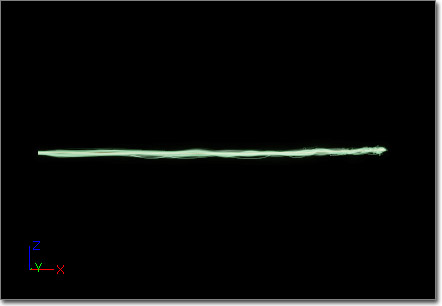
Beam
Always On - If true, the emitter will ensure there is always a live particle.
Beam Method - This enumeration allows for setting the method for generating your beam. It can be one of the following:
Interpolation Points - Indicates whether the beam should use the source and target tangents to interpolate a curve along the beam. If this value is less than or equal to zero, the beam will be a straight line between the source and target (i.e., no interpolation). If greater than zero, the beam will determine the path between source and target by interpolating between the two utilizing their respective tangent values. The number of steps it will use during this will be the value set in this property.
Max Beam Count - The maximum number of live beams the emitter is allowed to have.
Sheets - The number of sheets to render along the beam. Sheets will be evenly distributed around the beam path. For example, 2 sheets would for a cross if you were looking down the axis the beam is travelling down.
Speed - The speed at which the beam should move from source to target when firing up. If the value is set to 0, the beam will instantaneously jump from the source to the target.
Texture Tile - The number of times to tile the texture along the beam. Currently, this is unimplemented.
Texture Tile Distance - The distance along the beam that represents one tile of the source texture.
Up Vector Step Size - The approach to use for determining the Up vector(s) for the beam.
| Method | Description |
|---|---|
| PEB2M_Distance | Use the distance property to emit a beam along the X-axis of the emitter. |
| PEB2M_Target | Emit a beam from the source of the emitter to the supplied target. |
| PEB2M_Branch | Currently unused. |
| Value | Method |
|---|---|
| 0 | The Up vector should be calculated at every point in the beam |
| 1 | The Up vector should be calculated at the start at the beam and then used at every point |
| N | An Up vector should be calculated every N points and interpolated between them. Note: This method is not currently supported |
Branching
Branch Parent Name - Currently unused.
Distance
Distance - This float distribution provides the distance along the X-axis the beam should travel when the BeamMethod is set to PEB2M_Distance.
Rendering
Render Geometry - If true, the actual geometry for the beam will be rendered. This should typically be enabled as the trail is not visible otherwise.
Render Direct Line - If true, a direct line will be rendered between the source and target of the beam. Used for debugging in Cascade.
Render Lines - If true, lines will be rendered along each segment of the beam. Used for debugging in Cascade.
Render Tessellation - If true, the tessellated path between the source and target will be rendered. Used for debugging in Cascade.
Taper
Taper Method - How the beam is tapered along its length. Can be one of the following values:
Taper Factor - A distribution supplying the amount to taper the beam. When using a constant curve, a time value of 0.0 represents the taper at the source of the beam, while a time value of 1.0 is the target.
Taper Scale - The amount to scale the tapering. The final taper values used will be Taper = (TaperFactor * TaperScale). This is intended primarily to be used as a particle parameter distribution to allow game code to set scale factors on the tapering of the beam that correspond to its usage.
| Method | Description |
|---|---|
| PEBTM_None | No tapering is applied to the beam. |
| PEBTM_Full | Taper the beam relative to source moving to target, regardless of current beam length. |
| PEBTM_Partial | Currently unused. |
Mesh TypeData
The Mesh type data module indicates that the emitter should use StaticMesh instances rather than sprite particles. The Mesh type data module has the following properties:
CameraFacing
Apply Particle Rotation As Spin - If true, the 'sprite' particle rotation is applied to the mesh about the orientation axis (the direction mesh is pointing). Otherwise, the 'sprite' particle rotation is applied to the mesh about the camera facing axis.
Camera Facing - If true, then the X-axis of the mesh will always point towards the camera. When set, Axis Lock Option as well as all other locked axis/screen alignment settings are ignored.
Camera Facing Option - Determines how the mesh is oriented when the Camera Facing option is enabled. The following options are provided:
Note: All axis-locked camera facing options assume the AxisLockOption is set. EPAL_NONE will be treated as EPAL_X.
Note: All velocity-aligned options do NOT require the ScreenAlignment be set to PSA_Velocity. Doing so will result in additional work being performed... (it will orient the mesh twice).
| Option | Description |
|---|---|
| XAxisFacing_NoUp | The mesh's local X-axis faces the camera, while no attempt is made to face the other axes up or down. |
| XAxisFacing_ZUp | The mesh's local X-axis faces the camera, while the mesh's local Z-axis will attempt to face up (towards the world positive Z-axis). |
| XAxisFacing_NegativeZUp | The mesh's local X-axis faces the camera, while the mesh's local Z-axis will attempt to face down (towards the world negative Z-axis). |
| XAxisFacing_YUp | The mesh's local X-axis faces the camera, while the mesh's local Y-axis will attempt to face up (towards the world positive Z-axis). |
| XAxisFacing_NegativeYUp | The mesh's local X-axis faces the camera, while the mesh's local Y-axis will attempt to face down (towards the world negative Z-axis). |
| LockedAxis_ZAxisFacing | The mesh's local X-axis is locked on the Axis Lock Option axis, while the mesh's local Z-axis is rotated to face towards camera. |
| LockedAxis_NegativeZAxisFacing | The mesh's local X-axis is locked on the Axis Lock Option axis, while the mesh's local Z-axis is rotated to face away from camera. |
| LockedAxis_YAxisFacing | The mesh's local X-axis is locked on the Axis Lock Option axis, while the mesh's local Y-axis is rotated to face towards camera. |
| LockedAxis_NegativeYAxisFacing | The mesh's local X-axis is locked on the Axis Lock Option axis, while the mesh's local Y-axis is rotated to face away from camera. |
| VelocityAligned_ZAxisFacing | The mesh's local X-axis aligned to the velocity, while the mesh's local Z-axis is rotated to face towards camera. |
| VelocityAligned_NegativeZAxisFacing | The mesh's local X-axis aligned to the velocity, while the mesh's local Z-axis is rotated to face away from camera. |
| VelocityAligned_YAxisFacing | The mesh's local X-axis aligned to the velocity, while the mesh's local Y-axis is rotated to face towards camera. |
| VelocityAligned_NegativeYAxisFacing | The mesh's local X-axis aligned to the velocity, while the mesh's local Y-axis is rotated to face away from camera. |
Mesh
Allow Motion Blur - If true, the meshes emitted from this emitter will be motion blurred. This adds a velocity rendering pass.
Mesh - The StaticMesh that is rendered at the position of the emitter's particles.
Mesh Alignment - The alignment to use when rendering the mesh. The Required Module's Screen Alignment property MUST be set to PSA_TypeSpecific for this property to have any effect. The following options are provided:
Override Material - If true, the meshes will be rendered using the material from the emitter (assigned in the RequiredModule) rather than those applied to the static mesh model. Use this over the MeshMaterial module unless you have multiple UV channels on your mesh you need to assign material to, or you need to parameterize the material assignment for code.
| Option | Descriptions |
|---|---|
| PSMA_MeshFaceCameraWithRoll | Face the camera allowing for rotation around the mesh-to-camera vector (amount provided by the standard particle sprite rotation). |
| PSMA_MeshFaceCameraWithSpin | Face the camera allowing for the mesh to rotate about the tangential axis. |
| PSMA_MeshFaceCameraWithLockedAxis | Face the camera while maintaining the up vector as the locked direction. |
Orientation
Axis Lock Option - The axis to lock the mesh on. This overrides TypeSpecific mesh alignment as well as the LockAxis module. The following options are provided:
Pitch - The 'pre' rotation pitch (in degrees) to apply to the static mesh used.
Roll - The 'pre' rotation roll (in degrees) to apply to the static mesh used.
Yaw - The 'pre' rotation yaw (in degrees) to apply to the static mesh used.
| Option | Description |
|---|---|
| EPAL_NONE | No locking to an axis. |
| EPAL_X | Lock the mesh X-axis facing towards +X. |
| EPAL_Y | Lock the mesh X-axis facing towards +Y. |
| EPAL_Z | Lock the mesh X-axis facing towards +Z. |
| EPAL_NEGATIVE_X | Lock the mesh X-axis facing towards -X. |
| EPAL_NEGATIVE_Y | Lock the mesh X-axis facing towards -Y. |
| EPAL_NEGATIVE_Z | Lock the mesh X-axis facing towards -Z. |
| EPAL_ROTATE_X | Ignored for mesh emitters. Treated as EPAL_NONE. |
| EPAL_ROTATE_Y | Ignored for mesh emitters. Treated as EPAL_NONE. |
| EPAL_ROTATE_Z | Ignored for mesh emitters. Treated as EPAL_NONE. |
PhysX Mesh TypeData
The PhysX Mesh type data module can be used to display particles as rotating meshes. It is suitable for simulating small simple objects, such as debris or leaves. This type of emitter has been optimized with a fast instanced rendering path in order to enable massive particle effects. A great deal of the properties found in the PhysX Mesh type data module are shared with the standard Mesh type data module. For descriptions of those properties, see the Mesh TypeData section. The PhysX Mesh type data module has the following properties:
Fluid Rotation Coefficient - Defines the amount of particle mesh rotation results from linear velocity or collisions.
PhysX Par Sys - The PhysXParticleSystem asset which is used to simulate the particles for this emitter.
PhysX Rotation Method - Determines the method used for simulating the rotation of small differently shaped objects using particles. Select a method which reflects the basic shape features of your particle mesh.
Vertical Lod - Parameters for global EmitterLodControl.
For more information on using PhysXParticleSystems, see the PhysX Particle System Reference.
| Relative Fadeout Time | Needs to be set to the fraction of the particle lifetime that is used to graphically fade out the particle. The LOD system will try to fade particles out rather than delete them immediately. |
| Spawn Lod Rate Vs Life Bias | Defines how much the spawning volume should be affected by means of either reducing the emission rate or reducing particle lifetimes. |
| Weight For Fifo | The relative weight for an emitter effect with respect to removing old particles. A relatively low value makes the system delete particles from the other emitter effects, if possible. |
| Weight For Spawn Lod | Same as Weight For Fifo, but with respect to emission volume reduction. |
PhysX Sprite TypeData
The PhysX Sprite type data module can drive animation of all sorts of sprite particles using physics simulation through a PhysXParticleSystem. The PhysX Sprite type data module has the following properties:
Phys XPar Sys - The PhysXParticleSystem asset which is used to simulate the particles for this emitter.
Vertical Lod - Parameters for global EmitterLodControl.
| Relative Fadeout Time | Needs to be set to the fraction of the particle lifetime that is used to graphically fade out the particle. The LOD system will try to fade particles out rather than delete them immediately. |
| Spawn Lod Rate Vs Life Bias | Defines how much the spawning volume should be affected by means of either reducing the emission rate or reducing particle lifetimes. |
| Weight For Fifo | The relative weight for an emitter effect with respect to removing old particles. A relatively low value makes the system delete particles from the other emitter effects, if possible. |
| Weight For Spawn Lod | Same as Weight For Fifo, but with respect to emission volume reduction. |
Ribbon TypeData
The Ribbon type data module indicates that the emitter should output trails - connecting particles to form ribbons. The Ribbon type data module has the following properties:
Rendering
Distance Tessellation Step Size - The distance between tessellation points for the trail. This is used to determine how many tessellation points the trail has, and thus how smooth the trail is. The exact calculation is:
TessellationPoints = Trunc((Distance Between Spawned Particles) / (DistanceTessellationStepSize))Render Geometry - If true, the trail geometry will be rendered. This should typically be enabled as the trail is not visible otherwise. Render Spawn Points - If true, stars are rendered in the location of each spawned particle point along the trail. Used for debugging in Cascade. Render Tangents - If true, the tangent at each spawned particle point along the trail is rendered using a line. Used for debugging in Cascade. Render Tessellation - If true, the tessellated path between each spawned particle is rendered. Used for debugging in Cascade. Tangent Tessellation Scalar - The tangent scalar for tessellation. Angles between tangent A and B are mapped to [0.0f .. 1.0f]. This is then multiplied by TangentTessellationScalar to give the number of points to tessellate Tiling Distance - The (estimated) covered distance to tile the 2nd UV set at. If 0.0, a second UV set will not be passed in.
Spawn
Tangent Spawning Scalar - The tangent scalar for spawning. Angles between tangent A and B are mapped to [0.0f .. 1.0f]. This is then multiplied by Tangent Spawning Scalar to give the number of particles to spawn
Trail
Clip Source Segment - If true, the trail will not be joined to the source position.
Dead Trails On Deactivate - If true, trails are marked dead when the ParticleSystem is deactivated. This means the trails will still render, but no new particles will be spawned, even if the ParticleSystem is re-activated.
Dead Trails On Source Loss - If true, the trail is marked dead when the source of the trail is 'lost', i.e. the source particle dies.
Enable Previous Tangent Recalculation - If true, the previous tangent will be recalculated each time a new particle is spawned.
Max Particle In Trail Count - The maximum number of particles that the trail may contain at any one time.
Max Trail Count - The number of live trails allowed.
Render Axis - The 'render' axis for the trail (what axis the trail is stretched out on). The following options are provided:
Sheets Per Trail - The number of sheets, rotated around the length of the trail, to render for the trail.
Tangent Recalculation Every Frame - If true, all tangents are recalculated every frame to allow velocity/acceleration to be applied.
| Trails_CameraUp | Traditional camera-facing trail. |
| Trails_SourceUp | Use the up axis of the source for each spawned particle. |
| Trails_WorldUp | Use the world up axis. |
Module Types
Module types can be classified according to their base functionality.Acceleration Modules
These modules provide the ability to apply acceleration, or a change in velocity over time, to particles.Acceleration
(Hover for animated preview)
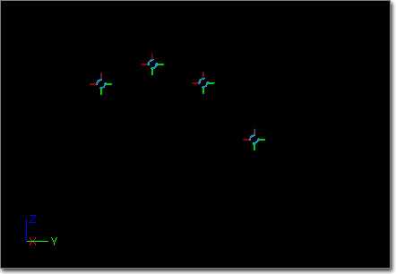
Acceleration
Acceleration - A vector distribution indicating the acceleration to use. The value is grabbed based on the EmitterTime at the spawn of the particle.
Apply Owner Scale - If true, the acceleration is multiplied by the scale of the ParticleSystemComponent.
This module will add a vector parameter to the particle payload data, UsedAcceleration. This value is used to retain the acceleration over the life of each particle.
Each frame, the current and base velocity values of the particle is then updated using the formula (velocity += acceleration * DeltaTime) where DeltaTime is the amount of time passed since the last frame.
AccelerationOverLife
Sets the acceleration of the particle over its lifetime. It contains the following member(s):
Acceleration
Accel Over Life - A vector distribution indicating the acceleration to use. Value is retrieved based on the RelativeTime at the update of the particle.
Always In World Space - If true, the acceleration vector is assumed to be in world-space coordinates. otherwise, it is assumed to be in local-space relative to the ParticleSystemComponent.
The acceleration is retrieved from the Acceleration distribution using the Particle.RelativeTime. The current and base velocity values of the particle are then updated using the formula (velocity += acceleration* DeltaTime) where DeltaTime is the amount of time passed since the last frame.
Attractor Modules
These modules implement methods of causing particles to be attracted toward a specific position in space, which can be defined in the form of a point, line, or another particle's position. They can even be combined to create more complex effects. This is the result of using a point attractor in combination with a line attractor with its strength animated over the life of the particle to create the swirling effect. (Hover for animated preview)
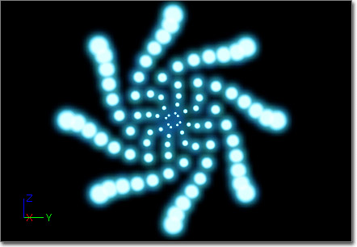
Attractor Line
The line attractor allows for having particles be drawn to a line in 3D space.
Attractor
End Point 0 - Specifies one endpoint of the line to attract the particles toward.
End Point 1 - Specifies the other endpoint of the line to attract the particles toward.
Range - A float distribution giving the radial range of the attraction around the line. Particle-life relative.
Strength - The strength of the attraction (negative values repel). Particle-life relative.
Attractor Particle
(Hover for animated preview)
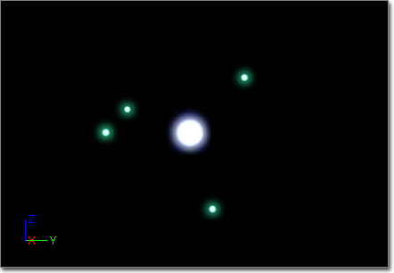
Attractor
Affect Base Velocity - If true, the velocity adjustment will be applied to the base velocity.
EmitterName - The name of the attracting source emitter.
Inherit Source Vel - If true, the particle will inherit the velocity of the source if it expires.
Range - A float distribution giving the radial range of the attraction around the source particle. Particle-life relative.
Renew Source - If true, when the source particle expires, a new one will be selected. Otherwise, the particle will no longer be attracted to another.
Strength - The strength of the attraction (negative values repel). Particle-life relative if Strength By Distance is false.
Strength By Distance - If true, the value in the strength curve is retrieved using the following value: (AttractorRange-DistanceToParticle)/AttractorRange. Otherwise, the strength is retrieved using the source particle RelativeTime.
Location
SelectionMethod - The method to use when selecting an attractor target particle from the emitter. Can be one of the following:
| Method | Description |
|---|---|
| EAPSM_Random | Randomly select a particle from the source emitter. |
| EAPSM_Sequential | Select a particle using a sequential order. |
Attractor Point
(Hover for animated preview)
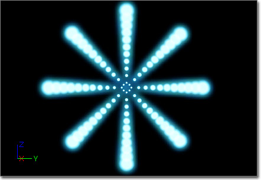
Attractor
Affect Base Velocity - If TRUE, the base velocity of the particle will be adjusted to retain the pull of the attractor.
Override Velocity - Unused.
Position - A vector distribution indicating the position of the point with respect to the particle emitter. The value is retrieved using EmitterTime.
Range - A float distribution that gives the radius of the points effect. The value is retrieved using EmitterTime.
Strength - The strength of the point attractor. The value is retrieved using EmitterTime.
Strength By Distance - If true, the strength is distributed evenly along the radius.
Use World Space Position - If true, the position is assumed to be in world-space coordinates.
Beam Modules
These modules are used to configure or modify the behavior of emitters using the Beam TypeData module.Beam Modifier
The Beam Modifier module allows either the Source or Target of the beam to be modified. It provides the following properties:
Modifier
Modifier Type - Specifies what the module is modifying.
| Type | Description |
|---|---|
| PEB2MT_Source | The module modifies the beam's Source. |
| PEB2MT_Target | The module modifies the beam's Target. |
Position
Position - The position value used to modify the position of the Source/Target.
Position Options - Options associated with the Position property.
| Option | Description |
|---|---|
| Lock | If true, the position of the Source/Target is locked for the life of the particle. |
| Modify | If true, the position of the Source/target will be modified. Otherwise, position is not affected. |
| Scale | If true, the position of the Source/Target is scaled by the Position value of the modifier module. Otherwise, override the position of the Source/Target. |
Strength
Strength - The strength value used to modify the strength of the Source/Target.
Strength Options - Options associated with the Strength property.
| Option | Description |
|---|---|
| Lock | If true, the strength of the Source/Target is locked for the life of the particle. |
| Modify | If true, the strength of the Source/target will be modified. Otherwise, strength is not affected. |
| Scale | If true, the strength of the Source/Target is scaled by the Strength value of the modifier module. Otherwise, override the strength of the Source/Target. |
Tangent
Tangent - The tangent value used to modify the tangent of the Source/Target.
Tangent Options - Options associated with the Tangent property.
| Option | Description |
|---|---|
| Lock | If true, the tangent of the Source/Target is locked for the life of the particle. |
| Modify | If true, the tangent of the Source/target will be modified. Otherwise, tangent is not affected. |
| Scale | If true, the tangent of the Source/Target is scaled by the Tangent value of the modifier module. Otherwise, override the tangent of the Source/Target. |
Beam Noise
(Hover for animated preview)
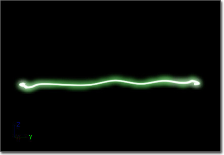
LowFreq
Apply Noise Scale - If true, apply the NoiseScale to the beam.
Frequency - The frequency of the noise points along the beam.
FrequencyDistance - The distance at which to place noise point. If this value is 0.0, then use the standard Frequency/Frequency_LowRange pair to determine the frequency of noise points. If not 0.0, noise points will be distributed at the given distance up to the static Frequency value. This allows for having fewer noise points on shorter beams, and to add noise points automatically as the beam grows.
Frequency_Low Range - If greater than 0, this value gives the low end of a range for the frequency. At the spawn time of a particle, the frequency for it will be set in the [Frequency_LowRange..Frequency] range.
Low Freq_Enabled - If true, indicates that low-frequency noise is enabled.
NOTE: Currently, low-frequency noise is the only noise supported.
Noise Lock Radius - The radius of the sphere around noise points that indicates they are locked.
Noise Lock Time - How long the noise points should be locked before picking a new noise point.
Noise Range - A distribution providing the range of the noise point positions. If using a constant curve, the mapping is time 0.0f is at the first frequency point, time 1.0 is at the target point. The remaining points are looked up by using the (CurrentFrequencyPoint * (1.0/TotalFrequencyPoints)).
Noise Range Scale - This distribution provides a method for scaling the noise range over the emitter time.
Noise Scale - The scale factor to apply to the noise range when bApplyNoiseScale is true. The lookup value for this distribution is determined by dividing the number of noise points present by the maximum number of noise points (ie, the Frequency).
Noise Speed - A vector distribution providing the speed at which noise points move.
Noise Tangent Strength - The strength to apply to tangents at noise points during the interpolation along the beam.
Noise Tension - The tension to apply to the tessellated noise line.
Noise Tessellation - The number of points to interpolate between noise points.
NRScale Emitter Time - If true, the NoiseRangeScale results will be retrieved using the emitter time. If FALSE, the NoiseRangeScale results will be retrieved using the particle time.
Oscillate - If true, noise points will bounce back and forth across the beam direct line.
Smooth - If true, attempt to smoothly move between noise points.
Target Noise - If true, apply noise to the target point.
Use Noise Tangents - If true, tangents are calculated at each noise point. Unused.
Beam Source
The Beam Source module implements a single source for a beam emitter. (If a source module is not present in a beam emitter, the emitter location itself is used as the source.) It provides the following properties:
Source
Lock Source - If true, the source position will only be set at spawn time.
Lock Source Strength - If true, the source strength will only be set at spawn time.
Lock Source Tangent - If true, the source tangent will only be set at spawn time.
Source - A vector distribution allowing for the setting of the source position. Used when the method is set to Default, or in the event of any other method failing to determine a source point. The value is retrieved from the distribution using the current emitter time.
Source Absolute - If true, treat the source as an absolute position in world space (i.e., do not transform it).
Source Method - This enumeration allows for setting the method for obtaining the beams source position. It can be one of the following:
Source Name - The name of the actor to use as the source. Only used when SourceMethod is set to PEB2STM_Actor. If the actor is not found, the fallback is to use the Source distribution.
Source Strength - A float distribution that provides the strength of the tangent from the source point for each beam. The value is retrieved using the current emitter time. This strength is used regardless of the method used to obtain the Source/SourceTangent.
Source Tangent - A vector distribution allowing for setting the source tangent. Used when the SourceTangentMethod is set to PEB2STTM_Distribution. The value is retrieved using the current emitter time.
Source Tangent Method - This enumeration allows for setting the method for obtaining the beams source tangent. It can be one of the following:
| Method | Description |
|---|---|
| PEB2STM_Default | Use the Source distribution. |
| PEB2STM_UserSet | Use the user set value. |
| PEB2STM_Emitter | Use the emitter position as the source. |
| PEB2STM_Particle | Currently unused. |
| PEB2STM_Actor | Use the position of the actor of the given name. |
| Method | Description |
|---|---|
| PEB2STTM_Direct | Use a direct line between the source and target. |
| PEB2STTM_UserSet | Use the user set value. |
| PEB2STTM_Distribution | Use the values from the SourceTangent distribution. |
| PEB2STTM_Emitter | Use the direction the emitter is facing. |
Beam Target
The Beam Target module implements a single target for a beam emitter. (If a target module is not present in a beam emitter, the emitter assumes that the beam is to be used directionally.) It provides the following properties:
Target
Lock Radius - The radius of the sphere that the current beam-end should be in to be considered locked to the target point. Used when utilizing a beam that has a Speed value set.
Lock Target - If true, the target position will only be set at spawn time.
Lock Target Strength - If true, the target strength will only be set at spawn time.
Lock Target Tangent - If true, the target tangent will only be set at spawn time.
Target - A vector distribution allowing for the setting of the target position. Used when the method is set to Default, or in the event of any other method failing to determine a target point. The value is retrieved from the distribution using the current emitter time.
Target Absolute - If true, treat the target as an absolute position in world space (ie, do not transform it).
Target Method - This enumeration allows for setting the method for obtaining the beams target position. It can be one of the following:
NOTE: If set to either Emitter or Particle, the target will use the value from the distribution.
Target Name - The name of the actor to use as the target. Only used when TargetMethod is set to PEB2STM_Actor. If the actor is not found, the fallback is to use the Target distribution.
Target Strength - A float distribution that provides the strength of the tangent from the target point for each beam. The value is retrieved using the current emitter time. This strength is used regardless of the method used to obtain the Target/TargetTangent.
Target Tangent - A vector distribution allowing for setting the target tangent. Used when the TargetTangentMethod is set to PEB2STTM_Distribution. The value is retrieved using the current emitter time.
Target Tangent Method - This enumeration allows for setting the method for obtaining the beams target tangent. It can be one of the following:
| Method | Description |
|---|---|
| PEB2STM_Default | Use the Target distribution. |
| PEB2STM_UserSet | Use the user set value. |
| PEB2STM_Emitter | Currently unsupported. |
| PEB2STM_Particle | Currently unsupported. |
| PEB2STM_Actor | Use the position of the actor of the given name. |
| Method | Description |
|---|---|
| PEB2STTM_Direct | Use a direct line between the source and target. |
| PEB2STTM_UserSet | Use the user set value. |
| PEB2STTM_Distribution | Use the values from the TargetTangent distribution. |
| PEB2STTM_Emitter | Use the direction the emitter is facing. |
Camera Modules
These modules modify the emitter behavior with respect to the camera.Camera Offset
The Camera Offset module allows the positions of sprite particles to be offset relative to the camera. It provides the following properties:
Camera
Camera Offset - The camera-relative offset to apply to the sprite particle location.
Spawn Time Only - If true, the offset from this module will only be processed when the particle is originally spawned.
Update Method - Specifies the method to use when updating the offset from this module.
| Method | Description |
|---|---|
| EPCOUM_Direct | Sets the offset directly using the Camera Offset value, overwriting any previous offset. |
| EPCOUM_Additive | Adds the Camera Offset value from this module to any previous offset. |
| EPCOUM_Scalar | Scales any existing offset by the Camera Offset value. |
Collision Modules
Collision
(Hover for animated preview)
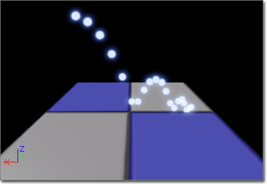
Collision
Apply Physics - A Boolean indicating whether physic should be applied between a particle and the object it collides with. [NOTE: This is currently one-way - particle --> object. The particle does not have physics applied to it - it just generates an impulse applied to the object it collides with.]
Collision Completion Option - An enumeration indicating what should happen with the particle once MaxCollisions is reached. It can be one of the following:
Damping Factor - A vector distribution indicating how much to `slow' the particle after a collision. The value is retrieved based on the EmitterTime at the spawn of the particle, and is stored in the particle.
Damping Factor Rotation - A vector distribution indicating how much to `slow' the rotation of the particle after a collision. The value is retrieved based on the EmitterTime at the spawn of the particle, and is stored in the particle.
Delay Amount - How long to delay before checking a particle for collisions. Value is retrieved using the EmitterTime. During update, the particle flag IgnoreCollisions will be set until the particle RelativeTime has surpassed the Delay Amount.
Dir Scalar - A float value that is used to scale the bound of the particle to 'assist' in avoiding interpenetration or large gaps.
Max Collisions - A float distribution indicating the maximum number of collisions a particle can have. The value is retrieved based on the EmitterTime at the spawn of the particle.
Only Vertical Normals Decrement Count - If TRUE, collisions that do not have a vertical hit normal will still react but do not count towards MaxCollisions. This allows for particles bouncing off walls and coming to rest on floors.
Particle Mass - A float distribution indicating the mass of the particle - for use when bApplyPhysics is TRUE. The value is retrieved based on the EmitterTime at the spawn of the particle.
Pawns Do Not Decrement Count - If TRUE, collisions with Pawns will still react but do not count towards MaxCollisions. This allows for bouncing particles off a pawn, but not having them freeze in mid-air.
Vertical Fudge Factor - A float value used to determine what is vertical. True vertical will have a Hit.Normal.Z == 1.0f. This allows for Z components in the range of [1.0-VerticalFudgeFactor..1.0] to count as a vertical collision.
| Options | Description |
|---|---|
| EPCC_Kill | Kill the particle when MaxCollisions is reached. (This is the default behavior.) |
| EPCC_Freeze | Freeze the particle in place. |
| EPCC_HaltCollisions | Stop collision checks, but keep updating. This will likely lead to particles `falling through' objects. |
| EPCC_FreezeTranslation | Stop translating the particle, but keep updating everything else. |
| EPCC_FreeRotation | Stop rotating the particle, but keep updating everything else. |
| EPCC_FreeMovement | Stop translating/rotating the particle, but keep updating everything else. |
Performance
Drop Detail - If true, the module will be ignored if the Drop Detail property of the WorldInfo is also true.
This module will add two vectors (UsedDampingFactor and UsedDampingFactorRotation) and an integer (UsedMaxCollisions) to the particle payload data. These values are used to track the collision information per particle.
The following pseudo-code explains the update process for collision particles.
Determine the location of the particle. This is required due to the fact
that the actual location isn't calculated until after the Update call.
Determine the appropriate extent to use during the line check.
if (SingleLineCheck indicates collision)
{
if (UsedMaxCollisions-- > 0) // Still collisions available
{
Adjust the velocity and rotation based on the collision
if (Applying physics)
{
Add an appropriate impulse to the hit object.
(The Mass is grabbed from the distribution relative to the
particle time.)
}
}
else
{
Out of collisions for this particle
Perform the appropriate action to take based on the CollisionCompletionOption
}
}
Color Modules
Color modules impact the color of the emitted particles.Initial Color
(Hover for animated preview)
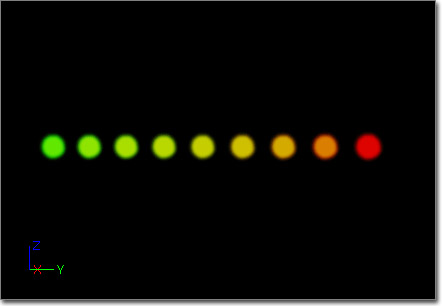
Color
Clamp Alpha - If TRUE, the alpha value will be clamped to the [0.0 .. 1.0f] range.
Start Alpha - A float distribution indicating the alpha component of the particle. Value is retrieved based on the EmitterTime at the spawn of the particle.
Start Color - A vector distribution indicating the color of the particle. Value is retrieved based on the EmitterTime at the spawn of the particle.
In Spawn, the module retrieves the appropriate values from the distributions using the emitter time, setting the Particle.Color and Particle.BaseColor values to it directly.
Init Color (Seeded)
The Init Color (Seeded) module is identical to the Initial Color module in that it sets the initial color of a particle at spawn time; however, this module allows you to specify seed information to be used when choosing distribution values in order to provide a more consistent effect from the module each time the emitter is used. It contains the following member(s):
Color
Clamp Alpha - If TRUE, the alpha value will be clamped to the [0.0 .. 1.0f] range.
Start Alpha - A float distribution indicating the alpha component of the particle. Value is retrieved based on the EmitterTime at the spawn of the particle.
Start Color - A vector distribution indicating the color of the particle. Value is retrieved based on the EmitterTime at the spawn of the particle.
RandomSeed
Random Seed Info - The random seed(s) to use for selecting "random" values for this module's properties.
In Spawn, the module retrieves the appropriate values from the distributions using the emitter time, setting the Particle.Color and Particle.BaseColor values to it directly.
| Property | Description |
|---|---|
| Get Seed From Instance | If true, the module will attempt to get the seed from the owner instance. If that fails, it will fall back to getting it from the Random Seeds array. |
| Instance Seed Is Index | If true, the seed value retrieved from the instance will be an index into the Random Seeds array. |
| Parameter Name | The name to expose to the placed instance for setting this seed. |
| Random Seeds | The random seed values to utilize for this module. If multiple values are specified, a value will be chosen at random by the instance. |
| Reset Seed On Emitter Looping | If true, the seed will be reset each time the emitter loops. |
Parameter Color
The Parameter Color module is used to set the color of a particle at spawn time according to an emitter instance parameter. It allows for the same emitter to be instanced in a level, but appear with different colors. It contains the following member(s):
Color
Color Param - The name of the parameter in the instance parameters to retrieve the color from.
Default Color - The default color to use in the event that the parameter is not set on the emitter.
In Spawn, the module retrieves the appropriate value from the instance parameters and sets it as the color. If it is not found, it will use the Default Color.
Note: Again, the Color is SET by this module. This means that any color modules that came before it will have their value stepped on!
Note: This module is the equivalent of using a ParticleParameter distribution in the Initial Color module. (It was written prior to ParticleParameter distributions existing.)
Color Over Life
(Hover for animated preview)
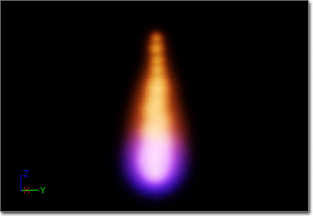
Color
Alpha Over Life - A float distribution indicating the alpha component to apply to a particle. The value is retrieved using the RelativeTime of the particle during its update.
Clamp Alpha - If true, the alpha value will be clamped to the [0.0 .. 1.0f] range.
Color Over Life - A vector distribution indicating the color to apply to a particle. The value is retrieved using the RelativeTime of the particle during its update.
In Spawn, the module retrieves the appropriate values from the distributions using the particle time, and sets the Particle Color and BaseColor values to it.
Note: Again, the Color is SET by this module. This means that any color modules that came before it will have their value stepped on!
In Update, the module retrieves the appropriate values from the distributions using the particle time, and sets the Particle.Color value to it.
Scale Color/Life
The Scale Color/Life module is used to scale the color of a particle over its lifetime. It contains the following member(s):
Color
Alpha Scale Over Life - A float distribution indicating the alpha component to apply to a particle. The value is retrieved using the RelativeTime of the particle during its update.
Color Scale Over Life - A vector distribution indicating the color to apply to a particle. The value is retrieved using the RelativeTime of the particle during its update.
Emitter Time - A Boolean indicating if the effect should be based on the emitter time or the particle time.
In Spawn and Update, the module retrieves the appropriate values from the distributions using the selected time, and uses these values to scale the particle color.
Event Modules
Event modules allow you to generate events based on particles interacting with themselves, each other or the world, and then listen for those events and cause reactions to them on an inter-particle system level. A good example is generating a named collision event whenever a particle collides with the world, and then spawning particles wherever those collisions occur.Event Generator
The Event Generator module will generate an event (or multiple events) based on conditions you specify. This module has a single Events array that contains a list of all events you want the emitter to be able to generate. Each item in the Events array has the following properties:
Events
Type - The type of event. The possible types include:
Frequency - How often to trigger the event. <=1 means every time. Use this to trigger an event on every other collision, say.
Low Freq - Allows for randomness in the frequency range. -1 means use Frequency without range
Particle Frequency - How many times to trigger the event per particle.
First Time Only - Boolean to trigger the event only on the first time it would fire.
Last Time Only - Boolean to trigger the event only on the last occurrence of when it would fire.
Use Reflected Impact Vector - Boolean to decide whether you orient the result of the collision event in the direction of the impact vector instead of the hit normal.
Custom Name - This is the name of your event, which allows you to set up a listener to listen for this event name and then act accordingly. All events need to be named.
Particle Module Events To Send To Game - The events we want to fire off when this event has been generated. Requires your game to implement new subclasses of ParticleModuleEventSendToGame representing the types of game events particle events should be able to trigger.
| Type | Description |
|---|---|
| EPT_Any | Generate a named event from any of the possible event occurrences. |
| EPT_Spawn | Generate the named event whenever a particle in this emitter spawns. |
| EPT_Death | Generate the named event whenever a particle in this emitter dies. |
| EPT_Collision | Generate the named event whenever a particle in this emitter collides with something |
| EPT_Kismet | Generate an event which talks to Kismet, allowing you to execute Kismet script or allow Kismet script to execute particle commands |
Event Receiver Kill All
Listens for a named event and then kills all the particles of the emitter.
ParticleModuleEventReceiverKillParticles
Stop Spawning - If true, the emitter will cease spawning new particles in addition to killing all existing particles.
Events
Event Generator Type - What type of event to listen for.
Event Name - The name of the event to listen for.
| Type | Description |
|---|---|
| EPT_Any | Listens for any event type with the name specified in the Event Name property. |
| EPT_Spawn | Listens for a spawn event. |
| EPT_Death | Listens for a death event. |
| EPT_Collision | Listens for a collision event. |
| EPT_Kismet | Listens for an event generated in Kismet using the Particle Event Generator action. |
Event Receiver Spawn
Listens for a named event and then spawns particles based on what events fire.
Location
Use PSys Location - Boolean to decide whether the spawn event happens at the event of the particle that triggered the event, or at the origin of the particle system.
Source
Event Generator Type - What type of event to listen for.
Event Name - The name of the event to listen for.
| Type | Description |
|---|---|
| EPT_Any | Listens for any event type with the name specified in the Event Name property. |
| EPT_Spawn | Listens for a spawn event. |
| EPT_Death | Listens for a death event. |
| EPT_Collision | Listens for a collision event. |
| EPT_Kismet | Listens for an event generated in Kismet using the Particle Event Generator action. |
Spawn
Spawn Count - Determines how many particles to spawn when an event fires.
Use Particle Time - For Death-based event receiving, if this is true, it indicates that the ParticleTime of the event should be used to look-up the SpawnCount. Otherwise (and in all other events received), use the emitter time of the event.
Velocity
Inherit Velocity - If true, the velocity of the particle that triggers the event will be used as the starting velocity of the spawned particle.
Inherit Velocity Scale - Multiplier for scaling the velocity if Inherit Velocity is true.
Kill Modules
Kill modules will kill a given particle if it meets the rules defined by specific implementations.Kill Box
The Kill box module is used to kill particles when they move outside of a defined box. It contains the following member(s):
Kill
Lower Left Corner - A vector distribution defining the lower left corner of the box.
Upper Right Corner - A vector distribution defining the upper right corner of the box.
Absolute - If TRUE, the corner settings will be considered as world-space values and remain unchanged when testing. If FALSE, the box will be transformed to the world-space of the emitter.
Kill Inside - If TRUE, particles will be killed if they fall INSIDE the box. If FALSE (the default), they will be killed when they fall OUTSIDE the box.
If the 3D preview mode is enabled, the wire box will be drawn in the Cascade preview window.
Kill Height
The Kill height module is used to kill particles when they move above a defined height. It contains the following member(s):
Kill
Height - A float distribution defining the height to kill particles at or above.
Absolute - If TRUE, the value will be considered as world-space values and remain unchanged when testing. If FALSE, the height will be transformed to the world-space of the emitter.
Floor - If TRUE, particles will be killed if they fall BELOW the height value. If FALSE (the default), they will be killed when they rise ABOVE the height value.
If the 3D preview mode is enabled, a plane will be rendered at the height of the kill value.
Lifetime Modules
Lifetime
(Hover for animated preview)
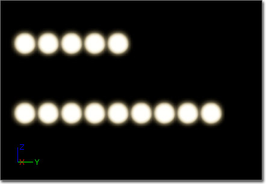
Lifetime
Lifetime - A float distribution indicating the lifetime of the particle, in seconds. Value is retrieved based on the EmitterTime at the spawn of the particle.
In Spawn, the module retrieves the appropriate values from the distribution using the current emitter time. This is then added to the Particle.OneOverMaxLifetime field, to allow for multiple lifetime modules to be applied.
Lifetime (Seeded)
The Lifetime (Seeded) module is identical to the Lifetime module in that it sets the lifetime of a particle at spawn time; however, this module allows you to specify seed information to be used when choosing distribution values in order to provide a more consistent effect from the module each time the emitter is used. It contains the following member(s):
Lifetime
Lifetime - A float distribution indicating the lifetime of the particle, in seconds. Value is retrieved based on the EmitterTime at the spawn of the particle.
RandomSeed
Random Seed Info - The random seed(s) to use for selecting "random" values for this module's properties.
In Spawn, the module retrieves the appropriate values from the distribution using the current emitter time. This is then added to the Particle.OneOverMaxLifetime field, to allow for multiple lifetime modules to be applied.
| Property | Description |
|---|---|
| Get Seed From Instance | If true, the module will attempt to get the seed from the owner instance. If that fails, it will fall back to getting it from the Random Seeds array. |
| Instance Seed Is Index | If true, the seed value retrieved from the instance will be an index into the Random Seeds array. |
| Parameter Name | The name to expose to the placed instance for setting this seed. |
| Random Seeds | The random seed values to utilize for this module. If multiple values are specified, a value will be chosen at random by the instance. |
| Reset Seed On Emitter Looping | If true, the seed will be reset each time the emitter loops. |
Location Modules
Initial Location
(Hover for animated preview)
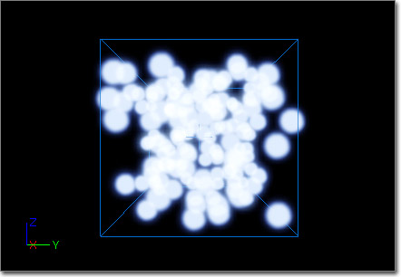
Location
Start Location - A vector distribution indicating the location the particle should be emitted, relative to the emitter. Value is retrieved based on the EmitterTime at the spawn of the particle.
In Spawn, the module retrieves the appropriate values from the distribution using the current emitter time. If the particle emitter does not have the Use Local Space flag, this value is transformed into world-space. The Particle.Location field then has this value added to it.
Initial Loc (Seeded)
The Initial Loc (Seeded) module is identical to the Initial Location module in that it sets the initial location of a particle at spawn time; however, this module allows you to specify seed information to be used when choosing distribution values in order to provide a more consistent effect from the module each time the emitter is used. It contains the following member(s):
Location
Start Location - A vector distribution indicating the location the particle should be emitted, relative to the emitter. Value is retrieved based on the EmitterTime at the spawn of the particle.
RandomSeed
Random Seed Info - The random seed(s) to use for selecting "random" values for this module's properties.
In Spawn, the module retrieves the appropriate values from the distribution using the current emitter time. If the particle emitter does not have the Use Local Space flag, this value is transformed into world-space. The Particle.Location field then has this value added to it.
| Property | Description |
|---|---|
| Get Seed From Instance | If true, the module will attempt to get the seed from the owner instance. If that fails, it will fall back to getting it from the Random Seeds array. |
| Instance Seed Is Index | If true, the seed value retrieved from the instance will be an index into the Random Seeds array. |
| Parameter Name | The name to expose to the placed instance for setting this seed. |
| Random Seeds | The random seed values to utilize for this module. If multiple values are specified, a value will be chosen at random by the instance. |
| Reset Seed On Emitter Looping | If true, the seed will be reset each time the emitter loops. |
World Offset
The World Offset module is used to offset the initial location of a particle. The offset is in world space but respects the Use Local Space flag through the life of the particle. This means the particle will always spawn offset in world space regardless of the orientation of the emitter, but will keep that offset relative to the emitter throughout its life. It contains the following member(s):
Location
Start Location - A vector distribution indicating the world-space offset the particle should use. Value is retrieved based on the EmitterTime at the spawn of the particle.
Bone/Socket Location
The Bone/Socket Location module allows particle to be spawned directly at the locations of bones or sockets of a SkeletalMesh. It provides the following properties:
BoneSocket
Editor Skel Mesh - Specifies a SkeletalMesh to use in the editor for preview purposes.
Orient Mesh Emitters - If true, mesh particles emitted by mesh emitters will be oriented to the bone or socket source.
Selection Method - The method by which a bone or socket is chosen from the Source Locations array.
Skel Mesh Actor Param Name - The name of the instance parameter specifying the SkeletalMeshActor that supplies the SkeletalMeshComponent to use in-game.
Source Locations - An array of source bones or sockets on the Skeletal Mesh from which to spawn particles.
Source Type - Specifies whether the source locations are bones or sockets.
Universal Offset - The offset to apply to each bone or socket source.
Update Position Each Frame - If true, the locations of the particles will be updated to those of the bones or sockets each frame.
| Method | Description |
|---|---|
| BONESOCKETSEL_Sequential | Items in the Source Locations array are chosen in sequential order. |
| BONESOCKETSEL_Random | Items in the Source Locations array are chosen at random. |
| BONESOCKETSEL_RandomExhaustive | Items in the Source Locations are chosen at random, but never the same item twice until all sources have been used. |
| Property | Description |
|---|---|
| Bone Socket Name | Specifies the name of the bone or socket on the SkeletalMesh to use as the source for the particles. |
| Offset | The offset from this individual bone or socket to use in addition to the Universal Offset. |
| Type | Description |
|---|---|
| BONESOCKETSOURCE_Sockets | Source Locations for spawning particles are socket names. |
| BONESOCKETSOURCE_Bones | Source Locations for spawning particles are bones. |
Direct Location
The Direct Location module is used to directly set the location of a particle. It contains the following member(s):
Location
Direction - Currently unused.
Location - A vector distribution giving the location of the particle at a given time. The value is retrieved based on the Particle RelativeTime. NOTE that the particle location is set to this value, thereby over-writing any previous module impacts.
Location Offset - A vector distribution giving the offset to apply from the position retrieved from the Location calculation. The offset is retrieved using the EmitterTime. This is useful for using a Location field set by script code to an Actor or something, and a random LocationOffset to offset it around the object. The offset will remain constant over the life of the particle.
Scale Factor - A vector distribution which allows for scaling the velocity of the object at a given point in the timeline. This allows for warping the particles to fit the path they are following.
Emitter Init Loc
The Emitter InitLoc module is used to set the initial location of a particle to the position of a particle from another emitter (in the same particle system). It contains the following member(s):
Location
Emitter Name - The name of the emitter to use as a source for the location particles.
Inherit Source Rotation - A Boolean that indicates the spawned particle should inherit the rotation of the source particle.
Inherit Source Rotation Scale - Amount to scale the source rotation by when inheriting it.
Inherit Source Velocity - A Boolean that indicates the spawned particle should inherit the velocity of the source particle.
Inherit Source Velocity Scale - Amount to scale the source velocity by when inheriting it.
Selection Method - An enumeration indicating how to select the particles from the source emitter. If can be one of the following values:
| Method | Description |
|---|---|
| ELESM_Random | Randomly select a particle from the source emitter. |
| ELESM_Sequential | Step through each of the particles from the source emitter in order. |
Emitter Direct Loc
The Emitter DirectLoc module is used to set the location of a particle to the position of a particle from another emitter (in the same particle system) for the particle's entire life. It contains the following member(s):
Location
EmitterName - The name of the emitter to use as a source for the location particles.
The particle used will be the one at the same index as the particle having its location set.
Cylinder
(Hover for animated preview)
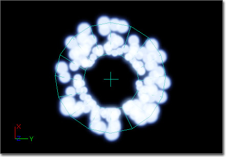
Location
Height Axis - An enumeration indicating which particle system axis should represent the height axis of the cylinder. Can be one of the following:
Positive_X, Positive_Y, Positive_Z, Negative_X, Negative_Y, Negative_Z - Boolean values indicating the valid axes for particle spawning.
Radial Velocity - A Boolean indicating that the particle velocity should only be applied in the `circular' plane of the cylinder.
Start Height - A float distribution giving the height of the cylinder - centered about the location.
Start Location - A vector distribution indicating the location of the bounding primitive, relative to the position of the emitter.
Start Radius - A float distribution giving the radius of the cylinder.
Surface Only - A Boolean value indicating that the particles should only be spawned on the surface of the primitive.
Velocity - A Boolean value indicating that the particle should get its velocity from the position within the primitive.
Velocity Scale - A float distribution indicating the scale that should be applied to the velocity. Only used if the Velocity value is checked (true).
| Axis | Description |
|---|---|
| PMLPC_HEIGHTAXIS_X | Orient the cylinder with height along the particle system X-axis. |
| PMLPC_HEIGHTAXIS_Y | Orient the cylinder with height along the particle system Y-axis. |
| PMLPC_HEIGHTAXIS_Z | Orient the cylinder with height along the particle system Z-axis. |
Cylinder (Seeded)
The Cylinder (Seeded) module is identical to the Cylinder module in that it sets the initial location of particles within a cylinder shape; however, this module allows you to specify seed information to be used when choosing distribution values in order to provide a more consistent effect from the module each time the emitter is used. It contains the following member(s):
Location
Height Axis - An enumeration indicating which particle system axis should represent the height axis of the cylinder. Can be one of the following:
Positive_X, Positive_Y, Positive_Z, Negative_X, Negative_Y, Negative_Z - Boolean values indicating the valid axes for particle spawning.
Radial Velocity - A Boolean indicating that the particle velocity should only be applied in the `circular' plane of the cylinder.
Start Height - A float distribution giving the height of the cylinder - centered about the location.
Start Location - A vector distribution indicating the location of the bounding primitive, relative to the position of the emitter.
Start Radius - A float distribution giving the radius of the cylinder.
Surface Only - A Boolean value indicating that the particles should only be spawned on the surface of the primitive.
Velocity - A Boolean value indicating that the particle should get its velocity from the position within the primitive.
Velocity Scale - A float distribution indicating the scale that should be applied to the velocity. Only used if the Velocity value is checked (true).
| Axis | Description |
|---|---|
| PMLPC_HEIGHTAXIS_X | Orient the cylinder with height along the particle system X-axis. |
| PMLPC_HEIGHTAXIS_Y | Orient the cylinder with height along the particle system Y-axis. |
| PMLPC_HEIGHTAXIS_Z | Orient the cylinder with height along the particle system Z-axis. |
RandomSeed
Random Seed Info - The random seed(s) to use for selecting "random" values for this module's properties.
| Property | Description |
|---|---|
| Get Seed From Instance | If true, the module will attempt to get the seed from the owner instance. If that fails, it will fall back to getting it from the Random Seeds array. |
| Instance Seed Is Index | If true, the seed value retrieved from the instance will be an index into the Random Seeds array. |
| Parameter Name | The name to expose to the placed instance for setting this seed. |
| Random Seeds | The random seed values to utilize for this module. If multiple values are specified, a value will be chosen at random by the instance. |
| Reset Seed On Emitter Looping | If true, the seed will be reset each time the emitter loops. |
Sphere
(Hover for animated preview)
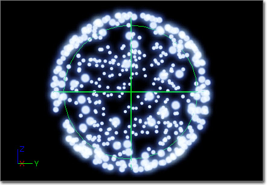
Location
Positive_X, Positive_Y, Positive_Z, Negative_X, Negative_Y, Negative_Z - Boolean values indicating the valid axes for particle spawning.
Start Location - A vector distribution indicating the location of the bounding primitive, relative to the position of the emitter.
Start Radius - A float distribution giving the radius of the sphere.
Surface Only - A Boolean value indicating that the particles should only be spawned on the surface of the primitive.
Velocity - A Boolean value indicating that the particle should get its velocity from the position within the primitive.
Velocity Scale - A float distribution indicating the scale that should be applied to the velocity. Only used if the Velocity value is checked (true).
Sphere (Seeded)
The Sphere (Seeded) module is identical to the Sphere module in that it sets the initial location of particles within a sphere shape; however, this module allows you to specify seed information to be used when choosing distribution values in order to provide a more consistent effect from the module each time the emitter is used. It contains the following member(s):
Location
Positive_X, Positive_Y, Positive_Z, Negative_X, Negative_Y, Negative_Z - Boolean values indicating the valid axes for particle spawning.
Start Location - A vector distribution indicating the location of the bounding primitive, relative to the position of the emitter.
Start Radius - A float distribution giving the radius of the sphere.
Surface Only - A Boolean value indicating that the particles should only be spawned on the surface of the primitive.
Velocity - A Boolean value indicating that the particle should get its velocity from the position within the primitive.
Velocity Scale - A float distribution indicating the scale that should be applied to the velocity. Only used if the Velocity value is checked (true).
RandomSeed
Random Seed Info - The random seed(s) to use for selecting "random" values for this module's properties.
| Property | Description |
|---|---|
| Get Seed From Instance | If true, the module will attempt to get the seed from the owner instance. If that fails, it will fall back to getting it from the Random Seeds array. |
| Instance Seed Is Index | If true, the seed value retrieved from the instance will be an index into the Random Seeds array. |
| Parameter Name | The name to expose to the placed instance for setting this seed. |
| Random Seeds | The random seed values to utilize for this module. If multiple values are specified, a value will be chosen at random by the instance. |
| Reset Seed On Emitter Looping | If true, the seed will be reset each time the emitter loops. |
Source Movement
The Source Movement module is used to offset the location of particles based on the movement of the source (i.e. the emitter). It contains the following properties:
SourceMovement
Source Movement - A vector distribution specifying the scaling factor to apply to the source movement before adding to the particle location. The value is retrieved using particle-relative time.
Material Modules
Material modules operate on the materials applied to particle emitters.Parameter Material
The Parameter Material module allows for overriding the material(s) applied to sprite emitters or sections of the static mesh used in a mesh emitter. It contains the following member(s):
ParticleModuleMaterialByParameter
Default Materials - An array of materials to attempt to use when no parameter matching the Material Parameters is found.
Material Parameters - An array of the names of instance parameters used to specify the material to use to override the current material. For sprite emitters, only the first element in the array is valid. The elements in the array are mapped to the material slots of the static mesh for mesh emitters.
If no material is supplied through an instance parameter and the entry is the Default Materials array is empty (set to None), the emitter's material for sprite emitters or the material from the StaticMesh element for mesh emitters will be used, allowing for selectively overriding the materials specific parts of the static mesh.
Orbit Modules
Orbit modules allow for rendering particle sprites offset/rotated away from the actual particle center.Orbit
(Hover for animated preview)
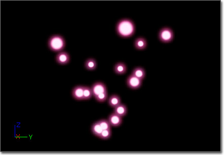
Chaining
Chain Mode - An enumeration that describes how this module is chained together with other modules in the emitter. The combination of the module with the one prior to it is defined by setting this value. It can be one of the following:
| Mode | Description |
|---|---|
| EOChainMode_Add | Add the module values with the previous results. |
| EOChainMode_Scale | Mutliply the module values with the previous results. |
| EOChainMode_Link | 'Break' the chain and apply the values from the previous results. |
Offset
Offset Amount - A vector distribution giving the offset of the sprite from the particle 'center'.
Offset Options - The options associated with the Offset Amount.
| Process During Spawn | If true, the associated piece of data will be processed during the spawning of a particle. |
| Process During Update | If true, the associated piece of data will be processed during the update of a particle. |
| Use Emitter Time | If true, the EmitterTime will be used when retrieving the associated piece of data. If false, then the particle RelativeTime will be used. |
Rotation
Rotation Amount - A vector distribution giving the amount to rotate the offset about the particle position. It is in 'turns', meaning 0 = no rotation, 0.5 = 180 degrees, 1.0 = 360 degrees.
Rotation Options - The options associated with the Rotation Amount.
| Process During Spawn | If true, the associated piece of data will be processed during the spawning of a particle. |
| Process During Update | If true, the associated piece of data will be processed during the update of a particle. |
| Use Emitter Time | If true, the EmitterTime will be used when retrieving the associated piece of data. If false, then the particle RelativeTime will be used. |
RotationRate
Rotation Rate Amount - A vector distribution giving the rate at which to rotate the offset about the particle position. In 'turns'.
Rotation Rate Options - The options associated with the Rotation Rate Amount.
| Process During Spawn | If true, the associated piece of data will be processed during the spawning of a particle. |
| Process During Update | If true, the associated piece of data will be processed during the update of a particle. |
| Use Emitter Time | If true, the EmitterTime will be used when retrieving the associated piece of data. If false, then the particle RelativeTime will be used. |
Orientation Modules
Axis Lock
The Axis Lock module is used to lock the particle facing to a given axis. Currently, this is a sprite-based module only. It contains the following member(s):
Orientation
Lock Axis Flags - Indicate the axis the particle should lock to. It can be one of the following values:
| Flag | Description |
|---|---|
| EPAL_NONE | No locking to an axis. |
| EPAL_X | Lock the sprite facing towards +X. |
| EPAL_Y | Lock the sprite facing towards +Y. |
| EPAL_Z | Lock the sprite facing towards +Z. |
| EPAL_NEGATIVE_X | Lock the sprite facing towards -X. |
| EPAL_NEGATIVE_Y | Lock the sprite facing towards -Y. |
| EPAL_NEGATIVE_Z | Lock the sprite facing towards -Z. |
| EPAL_ROTATE_X | Lock the sprite rotation on the X-axis. |
| EPAL_ROTATE_Y | Lock the sprite rotation on the Y-axis. |
| EPAL_ROTATE_Z | Lock the sprite rotation on the Z-axis. |
Parameter Modules
Dynamic Parameter
The Dynamic Parameter module is used to pass four scalar values to the material(s) used by the emitter allowing the emitter to control material effects.
ParticleModuleParameterDynamic
Dynamic Params - The array of dynamic parameters for the module.
Each element in the Dynamic Params array has the following properties:
Param Name - The name of the associated parameter in the DynamicParameter expression of the material. This property is read-only and populated automatically.
Use Emitter Time - If true, use the emitter time to retrieve the distribution value for the parameter. Otherwise, use the particle-relative time.
Spawn Time Only - If true, only set the paramater value when the particle is spawned. Otherwise, the value is updated each frame.
Value Method - Specifies the method used to get the parameter value.
Scale Velocity By Param Value - If true, the velocity value passed to the material will be scaled by the value set in the Param Value distribution.
Param Value - A float distribution for setting the parameter value to use with the EDPV_UserSet method.
| Method | Description |
|---|---|
| EDPV_UserSet | The value set in the Param Value property is passed to the material as the parameter's value. |
| EDPV_VelocityX | The particle velocity along the X-axis is passed to the material as the parameter's value. |
| EDPV_VelocityY | The particle velocity along the Y-axis is passed to the material as the parameter's value. |
| EDPV_VelocityZ | The particle velocity along the Z-axis is passed to the material as the parameter's value. |
| EDPV_VelocityMag | The magnitude of the particle velocity is passed to the material as the parameter's value. |
Dynamic Parameter (Seeded)
The Dynamic Parameter (Seeded) module is identical to the Dynamic Parameter module in that it allows the emitter to pass values to the material(s); however, this module allows you to specify seed information to be used when choosing distribution values in order to provide a more consistent effect from the module each time the emitter is used. It contains the following member(s):
ParticleModuleParameterDynamic
Dynamic Params - The array of dynamic parameters for the module.
Each element in the Dynamic Params array has the following properties:
Param Name - The name of the associated parameter in the DynamicParameter expression of the material. This property is read-only and populated automatically.
Use Emitter Time - If true, use the emitter time to retrieve the distribution value for the parameter. Otherwise, use the particle-relative time.
Spawn Time Only - If true, only set the parameter value when the particle is spawned. Otherwise, the value is updated each frame.
Value Method - Specifies the method used to get the parameter value.
Scale Velocity By Param Value - If true, the velocity value passed to the material will be scaled by the value set in the Param Value distribution.
Param Value - A float distribution for setting the parameter value to use with the EDPV_UserSet method.
| Method | Description |
|---|---|
| EDPV_UserSet | The value set in the Param Value property is passed to the material as the parameter's value. |
| EDPV_VelocityX | The particle velocity along the X-axis is passed to the material as the parameter's value. |
| EDPV_VelocityY | The particle velocity along the Y-axis is passed to the material as the parameter's value. |
| EDPV_VelocityZ | The particle velocity along the Z-axis is passed to the material as the parameter's value. |
| EDPV_VelocityMag | The magnitude of the particle velocity is passed to the material as the parameter's value. |
RandomSeed
Random Seed Info - The random seed(s) to use for selecting "random" values for this module's properties.
| Property | Description |
|---|---|
| Get Seed From Instance | If true, the module will attempt to get the seed from the owner instance. If that fails, it will fall back to getting it from the Random Seeds array. |
| Instance Seed Is Index | If true, the seed value retrieved from the instance will be an index into the Random Seeds array. |
| Parameter Name | The name to expose to the placed instance for setting this seed. |
| Random Seeds | The random seed values to utilize for this module. If multiple values are specified, a value will be chosen at random by the instance. |
| Reset Seed On Emitter Looping | If true, the seed will be reset each time the emitter loops. |
Rotation Modules
Initial Rotation
(Hover for animated preview)
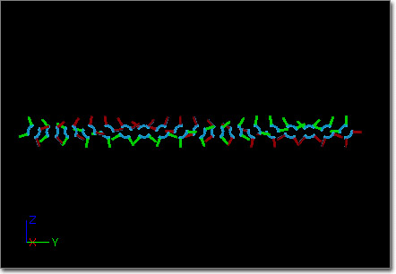
Rotation
Start Rotation - A float distribution indicating the rotation the particle should be emitted at (1.0 = 360 degrees). Value is retrieved based on the EmitterTime at the spawn of the particle.
Init Rotation (Seeded)
The Init Rotation (Seeded) module is identical to the Initial Rotation module in that it sets the initial rotation or particles; however, this module allows you to specify seed information to be used when choosing distribution values in order to provide a more consistent effect from the module each time the emitter is used. It contains the following member(s):
Rotation
Start Rotation - A float distribution indicating the rotation the particle should be emitted at (1.0 = 360 degrees). Value is retrieved based on the EmitterTime at the spawn of the particle.
Rotation/Life
(Hover for animated preview)
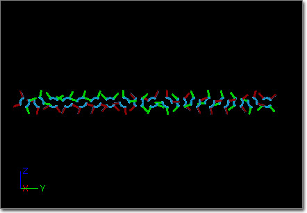
Rotation
Rotation Over Life - A float distribution indicating the rotation the particle should have (1.0 = 360 degrees). Value is retrieved based on the RelativeTime at the update of the particle.
Scale - A Boolean indicating that the existing particle rotation should be scaled by the value retrieved from the RotationOverLife distribution. If FALSE, then the particle rotation has the value retrieved added to it.
Rotation Rate Modules
Mesh Rot Rate Over Life
The Mesh Rot Rate Over Life module is used to set the rotation rate of a mesh-based particle over its lifetime. It contains the following member(s):
Rotation
Rot Rate - A vector distribution indicating the rotation rate the particle should have, in rotations per second. The value is retrieved using the particle-relative time.
Scale Rot Rate - If true, the current rotation rate of the particle is scaled by the value of the Rot Rate distribution.
Initial Rot Rate
(Hover for animated preview)
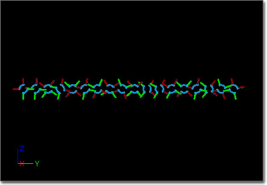
Rotation
Start Rotation Rate - A float distribution indicating the rotation rate the particle should have, in rotations per second. Value is retrieved based on the EmitterTime at the spawn of the particle, and is added to the Particle RotationRate and Base RotationRate values.
Init Rot Rate (Seeded)
The Initial RotRate (Seeded) module is identical to the Initial Rot Rate module in that it sets the rotation rate of a particle when it is emitted; however, this module allows you to specify seed information to be used when choosing distribution values in order to provide a more consistent effect from the module each time the emitter is used. It contains the following member(s):
RandomSeed
Random Seed Info - The random seed(s) to use for selecting "random" values for this module's properties.
| Property | Description |
|---|---|
| Get Seed From Instance | If true, the module will attempt to get the seed from the owner instance. If that fails, it will fall back to getting it from the Random Seeds array. |
| Instance Seed Is Index | If true, the seed value retrieved from the instance will be an index into the Random Seeds array. |
| Parameter Name | The name to expose to the placed instance for setting this seed. |
| Random Seeds | The random seed values to utilize for this module. If multiple values are specified, a value will be chosen at random by the instance. |
| Reset Seed On Emitter Looping | If true, the seed will be reset each time the emitter loops. |
Rotation
Start Rotation Rate - A float distribution indicating the rotation rate the particle should have, in rotations per second. Value is retrieved based on the EmitterTime at the spawn of the particle, and is added to the Particle RotationRate and Base RotationRate values.
Rot Rate/Life
(Hover for animated preview)
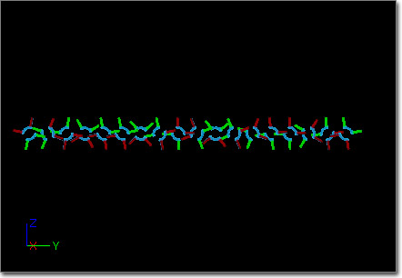
Rotation
Life Multiplier - A float distribution indicating the scale factor that should be applied to the rotation rate of the particle. Value is retrieved based on the RelativeTime at the spawn and update of the particle, and the Particle.RotationRate is multiplied by it.
Size Modules
Initial Size
(Hover for animated preview)
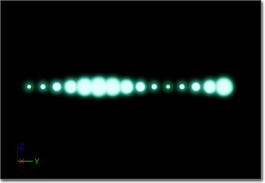
Size
Start Size - A vector distribution indicating the initial size that should be used for a particle. Value is retrieved based on the EmitterTime during the spawn of the particle and added to the Size and BaseSize of the spawning particle.
Initial Size (Seeded)
The Initial Size (Seeded) module is identical to the Initial Size module in that it sets the size of a particle when it is emitted; however, this module allows you to specify seed information to be used when choosing distribution values in order to provide a more consistent effect from the module each time the emitter is used. It contains the following member(s):
RandomSeed
Random Seed Info - The random seed(s) to use for selecting "random" values for this module's properties.
| Property | Description |
|---|---|
| Get Seed From Instance | If true, the module will attempt to get the seed from the owner instance. If that fails, it will fall back to getting it from the Random Seeds array. |
| Instance Seed Is Index | If true, the seed value retrieved from the instance will be an index into the Random Seeds array. |
| Parameter Name | The name to expose to the placed instance for setting this seed. |
| Random Seeds | The random seed values to utilize for this module. If multiple values are specified, a value will be chosen at random by the instance. |
| Reset Seed On Emitter Looping | If true, the seed will be reset each time the emitter loops. |
Size
Start Size - A vector distribution indicating the initial size that should be used for a particle. Value is retrieved based on the EmitterTime during the spawn of the particle and added to the Size and BaseSize of the spawning particle.
Size By Life
The Size By Life module scales the size of the particle by a given value over its lifetime. It contains the following member(s):
Size
LifeMultiplier - A vector distribution indicating the scale factor for the size that should be used for a particle. Value is retrieved based on the RelativeTime of the particle during its update.
Multiply X, Multiply Y, Multiply Z - If true, the corresponding scale factor will be applied to the particle size. If false, the corresponding component is left unaltered.
During both Spawn and Update, the Particle.Size value is multiplied with the retrieved scale value.
Size By Velocity
Scales the size of a particle by a portion of the velocity. It contains the following member(s):
Size
VelocityMultiplier - A vector distribution indicating the how the velocity should be scaled prior to scaling the size of the particle. The value is retrieved using the RelativeTime of the particle during its update.
Multiply X, Multiply Y, Multiply Z - If true, the corresponding scale factor will be applied to the particle size. If false, the corresponding component is left unaltered.
During both Spawn and Update, the Particle.Size value is multiplied by the retrieved scale value times the velocity of the particle at that time.
Size Scale
The Size Scale module sets the Size of the particle to the BaseSize times the given scale factor. NOTE that this module overrides any size adjustments made prior to this module in that frame. It contains the following member(s):
ParticleModuleSizeScale
Size Scale - A vector distribution indicating the how the BaseSize should be scaled before being used as the size of the particle. The value is retrieved using the RelativeTime of the particle during its update.
Enable X, Enable Y, Enable Z - Ignored.
Size Scale By Time
The Size Scale By Time module scales the size of the particle by a given value over its lifetime. It contains the following member(s):
ParticleModuleSizeScaleByTime
Size Scale By Time - A vector distribution indicating the scale factor for the size that should be used for a particle. Value is retrieved based on the AbsoluteTime of the particle during its update.
Enable X, Enable Y, Enable Z - If true, the corresponding scale factor will be applied to the particle size. If false, the corresponding component is left unaltered.
During both Spawn and Update, the Particle.Size value is multiplied with the retrieved scale value.
Spawn Modules
Spawn modules will impact the number/rate of emitter particles.Spawn Per Unit
Allows for spawning particles based on the distance the emitter has traveled. Useful for things like sprite based smoke trails where the trail needs to stay cohesive whether traveling quickly or slowly and spawning a relative number of particles to always fill in gaps. It contains the following member(s):
Burst
Process Burst List - If true, the BurstList of the SpawnModule of the emitter will be processed. If multiple Spawn modules are 'stacked' in an emitter, if ANY of them have this set to false, it will not process the SpawnModule BurstList.
Spawn
Ignore Movement Along X - If true, the X-component of the movement is ignored.
Ignore Movement Along Y - If true, the Y-component of the movement is ignored.
Ignore Movement Along Z - If true, the Z-component of the movement is ignored.
Ignore Spawn Rate When Moving - If true, process the default spawn rate when not moving. When the emitter is moving, skip processing the default spawn rate. If FALSE, return the Process Spawn Rate setting.
Movement Tolerance - A float value giving the tolerance for moving vs. not moving w.r.t. the Ignore Spawn Rate When Moving flag, i.e. if (DistanceMoved < (UnitScalar * MovementTolerance)) then consider it not moving.
Process Spawn Rate - A Boolean that indicates whether the SpawnRate of the RequiredModule should be processed or not. In the event of stacked spawn modules (multiple spawn modules on the same particle emitter), if ANY module indicates the 'default' spawn rate should not be processed it will not be processed.
Spawn Per Unit - A float distribution giving the amount of particles to spawn per unit. The value is retrieved using the EmitterTime.
Unit Scalar - A float value giving the scalar to apply to the distance traveled. The value from SpawnPerUnit is divided by this value to give the actual number of particles per unit.
Using this module when spawning from other emitters may seem to not behave as expected when trying to spawn particles from a single lead particle.
SpawnPerUnit actually uses the movement delta of the particle system itself and as such doesn't understand what work to do when it's attached to subemitters inside the particle system. Even though its parents are moving through space, the actual whole system is still stationary so the SpawnPerUnit module does nothing.
Store Spawn Time Modules
Store Spawn Time
The Store Spawn Time module causes the exact time a particle is spawned to be stored. This is useful for additional effects based off the time when the parent effect's particles were spawned. You need the spawn time because the RelativeTime is for when that specific particle system will die. Due to having random durations you are not guaranteed for that value to represent the order in which the individual particles were spawned.SubUV Modules
Note: SubUV modules should only be applied to an emitter when the InterpolationMethod is set to something other than PSUVIM_None.SubImage Index
The SubImage Index module selects the sub-image to use based on a float distribution. Currently, sub-images are ordered from left-to-right, top-to-bottom. It contains the following member(s):
SubUV
Sub Image Index - A float distribution indicating the index of the sub-image should be utilized for the particle. The value is retrieved using the RelativeTime of the particle during its update. [NOTE: Slightly higher values should be used due to the actual value being a float. For example, if the second image is desired - image 1 - then the value should be set to 1.01.]
SubUV Movie
The SubUV Movie module cycles through the sub-images of the texture in sequential order at a specified framerate, similar to how a flipbook texture behaves. It contains the following properties:
FlipBook
Frame Rate - A float distribution specifying the framerate at which the sub-images should be 'flipped' through.
Starting Frame - The starting image index for the SubUV (1 = the first frame). Assumes order of Left->Right, Top->Bottom. If greater than the last frame, it will clamp to the last one. If 0, then randomly selects a starting frame.
Use Emitter Time -If true, the emitter time is used to retrieve the value of the FrameRate distribution. Otherwise, the relative particle time is used.
SubUV Direct
The SubUV Direct module directly sets the texture coordinates to use for the SubUV particle. It contains the following member(s):
SubUV
Sub UVPosition - A vector distribution indicating the upper-left corner of the texture coordinates desired.
Sub UVSize - A vector distribution indicating the size of the texture sample desired.
SubUV Select
Selects the sub-image to use based on a vector distribution. The x (red) and y (green) parameters of the distribution are used to index the horizontal (U) and vertical (V) sub-image, respectively. It contains the following member(s):
SubUV
Sub Image Select - A vector distribution indicating the horizontal and vertical index of the sub-image desired for display. The value is retrieved using the RelativeTime of the particle during its update.
Velocity Modules
Initial Velocity
(Hover for animated preview)
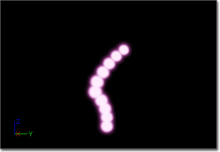
Velocity
Apply Owner Scale - If true, the velocity value will be scaled by the ParticleSystemComponent's scale.
In World Space - If true, the velocity is assumed to be in world-space.
Start Velocity - A vector distribution providing the velocity to apply to a particle at its spawn time. The value is retrieved using the EmitterTime of the owner emitter.
Start Velocity Radial - A float distribution providing the velocity to apply to a particle along its radial direction. This direction is determined by the subtracting the location of the emitter from the particle location at spawn time. The value is retrieved using the EmitterTime of the owner emitter.
Initial Vel (Seeded)
The Initial vel (Seeded) module is identical to the Initial Velocity module in that it sets the velocity of a particle when it is emitted; however, this module allows you to specify seed information to be used when choosing distribution values in order to provide a more consistent effect from the module each time the emitter is used. It contains the following member(s):
RandomSeed
Random Seed Info - The random seed(s) to use for selecting "random" values for this module's properties.
| Property | Description |
|---|---|
| Get Seed From Instance | If true, the module will attempt to get the seed from the owner instance. If that fails, it will fall back to getting it from the Random Seeds array. |
| Instance Seed Is Index | If true, the seed value retrieved from the instance will be an index into the Random Seeds array. |
| Parameter Name | The name to expose to the placed instance for setting this seed. |
| Random Seeds | The random seed values to utilize for this module. If multiple values are specified, a value will be chosen at random by the instance. |
| Reset Seed On Emitter Looping | If true, the seed will be reset each time the emitter loops. |
Velocity
Apply Owner Scale - If true, the velocity value will be scaled by the ParticleSystemComponent's scale.
In World Space - If true, the velocity is assumed to be in world-space.
Start Velocity - A vector distribution providing the velocity to apply to a particle at its spawn time. The value is retrieved using the EmitterTime of the owner emitter.
Start Velocity Radial - A float distribution providing the velocity to apply to a particle along its radial direction. This direction is determined by the subtracting the location of the emitter from the particle location at spawn time. The value is retrieved using the EmitterTime of the owner emitter.
Inherit Parent Vel
Contributes the velocity of the parent (the particle emitter itself) to a particle when spawning. It contains the following member(s):
Velocity
Apply Owner Scale - If true, the velocity value will be scaled by the ParticleSystemComponent's scale.
In World Space - If true, the velocity is assumed to be in world-space.
Scale - A vector distribution that is applied to the parent velocity prior to adding it to the particle velocity during the spawn. The value is retrieved using the RelativeTime of the particle.
Velocity/Life
(Hover for animated preview)
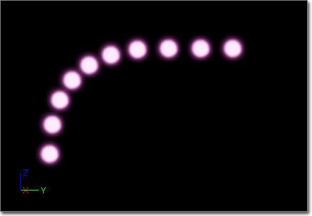
Velocity
Absolute - If true, the velocity will be set to the value in the distribution when true. This allows for directly setting the velocity of a particle at a given point of its lifetime. It is important to note that this setting will 'step on' any previous modules that affect velocity. It will also prevent the "Initial Velocity" module from contributing to the initial velocity of particles. If false, the velocity will be scaled by the value of the distribution.
Apply Owner Scale - If true, the velocity value will be scaled by the ParticleSystemComponent's scale.
In World Space - If true, the velocity is assumed to be in world-space.
Note: Local-space emitters that are moving will see strange results.
Vel Over Life - A vector distribution that is used as the scaling value applied to the velocity. The value is retrieved using the RelativeTime of the particle.
Lit Particles
- The material is using a lighting model other than unlit (nondirectional works great for integrating effects into the world and is very cheap; or use phong to give yourself a direction for normal mapping, etc.).
- In the LOD distance settings in Cascade, there is a new flag for each separate LOD called bLit. Make sure that is selected.